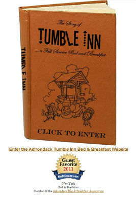
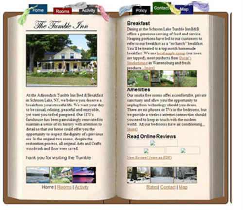
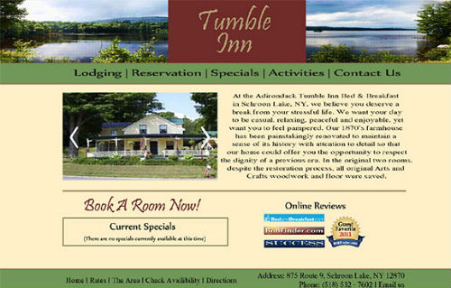
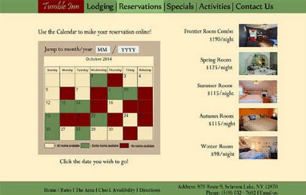

A New Look for Tumbleinn.net
Bringing an old site an entire new look
Why a Revamp
The point of this project was to find a site online, in my case Tumbleinn.net, and give it a new look. When I first got to the site while looking for vacations spot, the entire site was positioned in the top left corner and didn't resize at all. It was designed to look like a book, which while cool in theory, was less than ideal visually.


I really hated this site when I went to it. It actually made me not want to stay at the inn based on their poor web design. Thankfully, since I completed my project, they themselves have redone the site and it's much easier on the eyes.
My Designs


If you're curious about their new design go here: Tumbleinn.net
If you want to see the complete old site go here: Old Tumbleinn.net